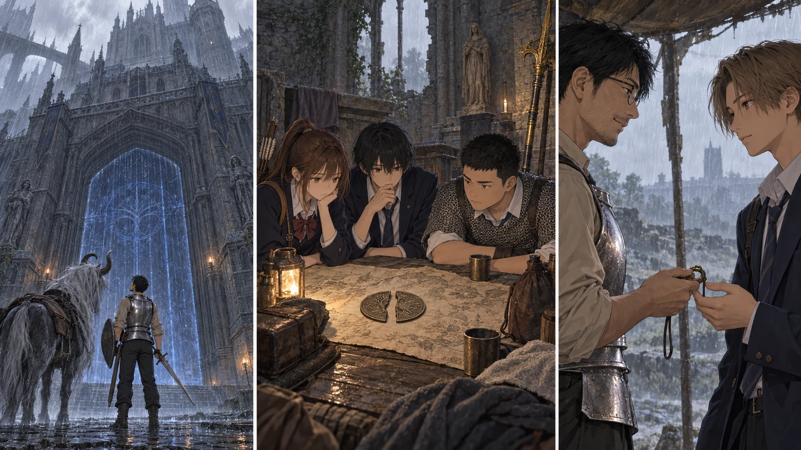

最新の本編へ五日分の道を、机の上へ。

【DAY46 午前｜湖の町】雨が水面を叩き、建物の輪郭を細かく揺らしていた。先生は沈んだ町を見渡し、石碑から北部の地図を手にする。塔を止め、割符も揃った。それでも、まだこの世界を出る道の途中だ。地図に描かれた建物を、攻略済みの場所と取り違えないようにする。
【南レアルカリア門】門の向こうへ続く光を、先生は外から確かめた。鍵がない。ここで試しに力押しはしない。手帳に「封印」「鍵未取得」「入口まで確認」と三つに分けて記す。竜の背後にあるという鍵の話は知識としてあるが、今日はその竜を見に行っていない。見たことと、知っているつもりのことを混ぜない。
門前町と南門の祝福は触れずに記録した。これで救出用に残した光は十六。ただし、十六回いつでも助かるという意味ではない。そこへ生きて辿り着き、初めて触れられる者が必要だ。その条件も、先生は地図の端へ書き足した。
【教会周辺｜帰路を守る二隊】探索隊は新しい遠征を重ねず、普段の補給路へ戻った。巡回兵四人は、以前なら十二人で息を詰めて見送った相手だった。今は前衛が止め、射手が確実に狙い、退く仲間の場所を空けられる。追いかけて陣地へ入らない。それも、戦えるようになった後の判断だった。
【留守の二十人】水を汲み、煮沸し、容器を洗い、乾かした袋へ移す。今日の狩りは鹿二頭。食事は全員分を揃え、使った分も帳面から引く。雨に煙が薄く流れて、昨日の石積みの内側では寝床の布が乾いたままだった。誰かが戦っている間にも、帰って座れる場所を誰かが作っていた。
【18:30｜作戦会議】割符の左と右を、皆の見えるところへ並べる。まだ昇降機は動かしていない。城の小部屋は全員が自分の足で登録を済ませた。狂い火の眼は止まった。学院の門は見つけたが、鍵も二つ目の大ルーンもない。先生は、できたことと、残っていることを同じ紙へ載せた。
「次の赤月まで、四日です」と結衣が言った。百日目までは五十四日。進むための日と、帰れる場所を維持する日を別々には買えない。先生は、学院の鍵を取りに行く案、割符を使う前に道と隊列を確かめる案、赤月への備えを先に済ませる案を示した。どれを選ぶかで、明日持っていく荷物も変わる。
【雨の下で】会議のあと、先生は颯へ指笛を返した。いつもの受け渡しなのに、今日は颯が少しだけ笑った。「毎日ちゃんと返ってきますね」。先生は、あの傷のことを忘れていない。五日間、新しく誰も失わなかったことも、当然だとは思わない。「次も、返しに来る」。雨が屋根を鳴らす。皆が眠る前に、明日の地図を乾いた場所へしまった。